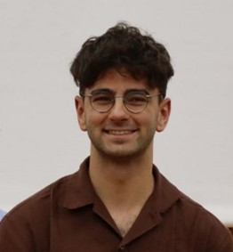

- Hello! I am Sahánd, currently (2025) a graduate student at the
COR department of Delft University of Technology.
With this website I aim to share a bit about myself, my research passions and my past and current projects.
- I am generally interested in most aspects of intelligent robotic systems( machine learning, computer vision, motion planning),
but my passion lies at the intersection of nonlinear control, machine learning
and how bio-inspired design shapes embodied intelligence.
- I am strongly passionate about enabling robots to have smooth, intelligent and explainable
interactions (specifically, locomotion) with their environment through harmonious design of mechanics and control.
- Besides robotics, I've been a hobbyist game developer for a long time. Please feel free to look around if anything here interests you! :)
